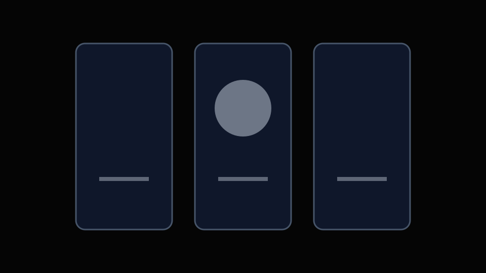
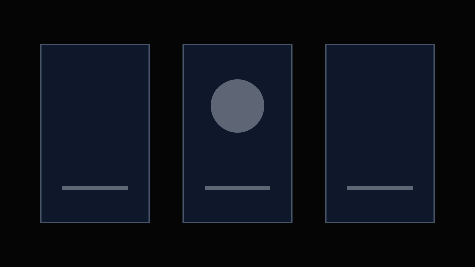
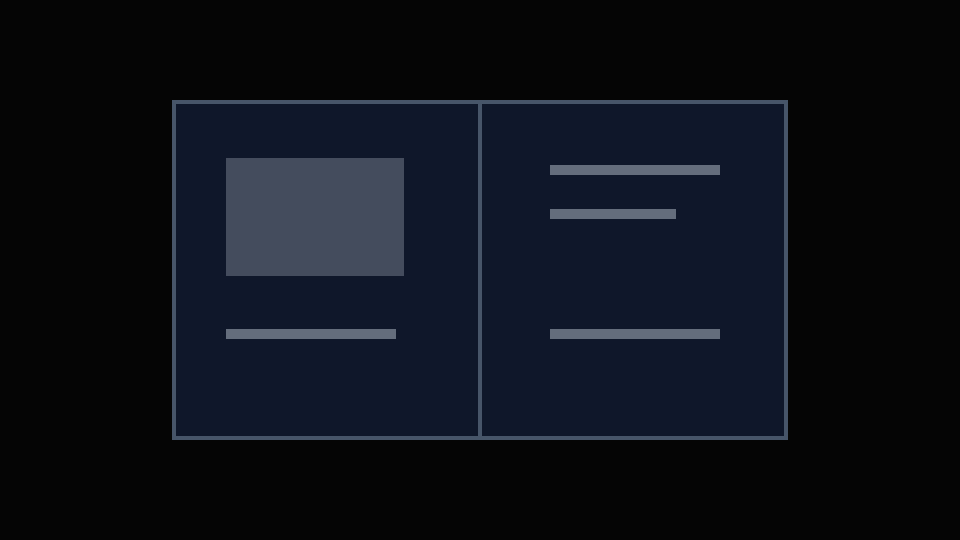

Add the consumer product and its single most important value proposition.
Choose a product with meaningful form, CMF, interaction, or function so the project still supports an industrial and product design identity.
Hero Project 03 Framework / Commercial Product Storytelling
Use this page to demonstrate how a product proposition becomes an emotionally engaging, commercially coherent launch system across CGI, motion, and campaign formats.

01 / Commercial Brief
Choose a product with meaningful form, CMF, interaction, or function so the project still supports an industrial and product design identity.
Specify where the visual system must work: product page, social media, retail display, launch film, presentation, or digital advertising.
02 / Visual Strategy & Art Direction
Moodboard / Direction
Do not show a decorative moodboard alone. Annotate how the direction expresses the product promise and separates the product from competitors.

Lighting & Color
Compare directions and explain the selected emotional and material effect.
Composition & Type
Show framing, scale, hierarchy, copy placement, and brand consistency.
03 / Storyboard & Motion Structure
Add the opening image or motion that establishes tone and earns attention.
Add how the full product is revealed with clear silhouette and material quality.
Add one benefit-led sequence that connects function to customer value.
Add tactile detail, use context, CMF, or emotional imagery.
Add the final product promise, brand moment, or launch call to action.
04 / CGI Development
Clarify whether the model was designed, supplied, optimized, or rebuilt.
Evidence: wireframe or before / afterConnect finish decisions to brand tone and product positioning.
Evidence: material test sheetExplain how scale, edge definition, reflections, and focus guide attention.
Evidence: selected tests

05 / Feature Communication

Feature Film Placeholder / 6–12 Seconds
Begin with the customer benefit, then decide whether assembly, transparency, transformation, particles, or close-up motion is actually necessary to explain it.
Benefit → Visual Device → Customer Understanding06 / Hero Launch Film
07 / Campaign System

Key Visual 01
Add the image that carries the entire visual direction and product proposition.

Product Page
Add product, detail, feature, and use-context frames.
Social Formats
Add vertical, square, or short-loop versions derived from the same system.
Launch Asset
Add the most relevant additional customer touchpoint.
System Summary
Show the recurring color, type, camera, material, and motion rules.
08 / Contribution & Delivery
Credit any supplied model, music, typeface, brand asset, collaborator, or external production resource.
If self-initiated, state it clearly. Replace business impact with project objectives or learning unless real campaign results exist.
Add 15–30 second hero film
Add 3–5 key visuals
Add feature animation
Add product page imagery
Add social adaptations
Add launch or presentation asset